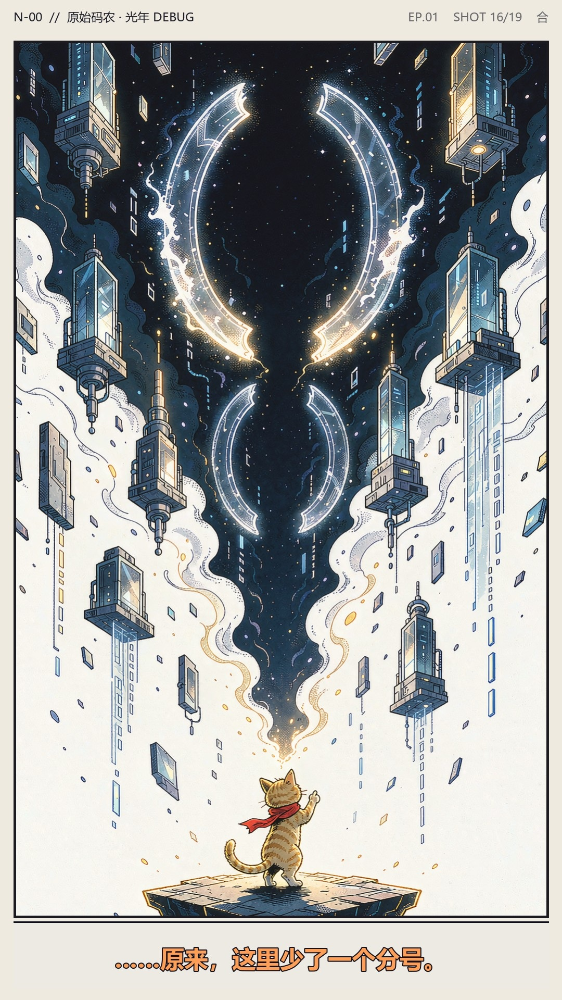

lightyear-debug.mp4
画幅9:16 竖屏 · 1080x1920
时长01:48.00（1 分 48 秒）
帧率24 fps / H.264 + AAC
结构19 镜 · 5 场景 · 起承转合四段
画风日式赛博朋克漫画：粗墨线 / 网点 / 平涂，深靛蓝 + 霓虹青品红，转段翻为白与暖金
配音普通话 12 句（4 条声线），硬字幕与配音实测时长同步
音频15 类程序化音效 / 28 个事件 / 4 段 BGM / 108 秒立体声混音
docs/01_默认设定与可替换项.md。| 编号 | 场景 | 段落 | 时间 | 色调 | 戏剧功能 |
|---|---|---|---|---|---|
| S1 | 霓虹雨巷 · 招聘塔门前 | 起 | 00:00–00:24 | 深靛蓝 / 品红霓虹 / 冷雨 | 被判定「原始」，建立主角的笨拙与不被接纳 |
| S2 | 地下资格筛选大厅 | 承 | 00:24–00:41 | 冷蓝荧光 / 人海编号光牌 | 制度化的拒绝，把主角推到边缘 |
| S3 | 旧楼天台 · CRT 终端 | 承 → 转 | 00:41–00:57 | 青绿屏幕光 / 雨渐停 | 一个键一个键敲完那行代码，触发底层协议 |
| S4 | 全城熄灭 · 光年拉升 | 转 | 00:57–01:21 | 近黑 → 白 / 暖金，强烈反差 | 尺度反转：城市→电路→芯片→运行日志 |
| S5 | 宇宙源码层 · 收束 | 合 | 01:21–01:48 | 纯白与暖金高调 | 补上分号，宇宙重启；关掉录用通知继续写代码 |
| 镜号 | 时间码 | 时长 | 段落 | 场景 | 版面 / 原画 | 镜头运动 | 转场 | 对白字幕 |
|---|---|---|---|---|---|---|---|---|
| 01 | 00:00.00–00:05.00 | 5.0s | 起 | S1 | single · p01 | push | fade_black | 这座城，只认最新版本的语言。 |
| 02 | 00:05.00–00:10.00 | 5.0s | 起 | S1 | v2 · p02 + p03 | push_pull | panel_wipe | — |
| 03 | 00:10.00–00:15.50 | 5.5s | 起 | S1 | single · p04 | push_pan_right | flash_white | 「技能栈：原始。不予受理。」 |
| 04 | 00:15.50–00:21.00 | 5.5s | 起 | S1 | v3 · p05 + p03 + p02 | push | screentone_flash | ……我只会这一行。 |
| 05 | 00:21.00–00:24.00 | 3.0s | 起→承 | S1/S2 | single · p06 | push_dark | cut_black | — |
| 06 | 00:24.00–00:30.00 | 6.0s | 承 | S2 | single · p06 | pan_right | panel_wipe | 队伍没有尽头，编号一直排到看不见的地方。 |
| 07 | 00:30.00–00:35.50 | 5.5s | 承 | S2 | v2 · p07 + p05 | push | flash_red | 不兼容。 |
| 08 | 00:35.50–00:41.00 | 5.5s | 承 | S2 | single · p01 | pull | fade_black | — |
| 09 | 00:41.00–00:46.50 | 5.5s | 承→转 | S3 | v2 · p08 + p09 | push_pull | screentone_flash | 它用爪子，一个键，一个键，把那行代码敲完。 |
| 10 | 00:46.50–00:52.00 | 5.5s | 承→转 | S3 | single · p09 | push_slow | none | — |
| 11 | 00:52.00–00:57.50 | 5.5s | 转 | S3 | single · p09 | hold_shake | flash_white | 底层协议，已接入。 |
| 12 | 00:57.50–01:03.50 | 6.0s | 转 | S4 | single · p10 | pull_fast | flash_white | 灯灭的那一秒，视野被拉到了光年之外。 |
| 13 | 01:03.50–01:09.50 | 6.0s | 转 | S4 | single · p11 | pull_fast | dissolve | — |
| 14 | 01:09.50–01:15.50 | 6.0s | 转 | S4 | single · p12 | pull_slow | dissolve | 原来招聘塔，只是一个函数。 |
| 15 | 01:15.50–01:21.50 | 6.0s | 转 | S4 | single · p13 | pan_right | screentone_flash | — |
| 16 | 01:21.50–01:27.50 | 6.0s | 合 | S5 | single · p14 | push | fade_white | ……原来，这里少了一个分号。 |
| 17 | 01:27.50–01:35.00 | 7.5s | 合 | S5 | v2 · p14 + p15 | push_pull | flash_white | — |
| 18 | 01:35.00–01:41.00 | 6.0s | 合 | S5 | v2 · p04 + p16 | push_pull | panel_wipe | 录用通知：已通过。 |
| 19 | 01:41.00–01:48.00 | 7.0s | 合 | S5 | single · p16 | pull_slow | fade_black | 它关掉通知，继续写它的代码。 |
docs/subtitles.srt 为标准外挂字幕。入点/出点取配音实测时长。| # | 镜号 | 入点 | 出点 | 时长 | 说话人 | 字幕文本 |
|---|---|---|---|---|---|---|
| 1 | 01 | 00:00.38 | 00:04.27 | 3.89s | 旁白 | 这座城，只认最新版本的语言。 |
| 2 | 03 | 00:10.38 | 00:13.84 | 3.46s | HR-Ω | 「技能栈：原始。不予受理。」 |
| 3 | 04 | 00:15.88 | 00:17.99 | 2.11s | 阿橘 | ……我只会这一行。 |
| 4 | 06 | 00:24.38 | 00:29.13 | 4.75s | 旁白 | 队伍没有尽头，编号一直排到看不见的地方。 |
| 5 | 07 | 00:30.38 | 00:32.04 | 1.66s | 系统音 | 不兼容。 |
| 6 | 09 | 00:41.38 | 00:46.25 | 4.87s | 旁白 | 它用爪子，一个键，一个键，把那行代码敲完。 |
| 7 | 11 | 00:52.38 | 00:55.28 | 2.90s | 系统音 | 底层协议，已接入。 |
| 8 | 12 | 00:57.88 | 01:02.03 | 4.15s | 旁白 | 灯灭的那一秒，视野被拉到了光年之外。 |
| 9 | 14 | 01:09.88 | 01:13.48 | 3.60s | 旁白 | 原来招聘塔，只是一个函数。 |
| 10 | 16 | 01:21.88 | 01:25.02 | 3.14s | 阿橘 | ……原来，这里少了一个分号。 |
| 11 | 18 | 01:35.38 | 01:37.68 | 2.30s | HR-Ω | 录用通知：已通过。 |
| 12 | 19 | 01:41.38 | 01:44.84 | 3.46s | 旁白 | 它关掉通知，继续写它的代码。 |
| # | 镜号 | 角色 | 声线 | 语速 | 入点 | 出点 | 时长 | 文本 |
|---|---|---|---|---|---|---|---|---|
| 1 | 01 | 旁白 | zh-CN-YunxiNeural | -6% | 00:00.38 | 00:04.27 | 3.89s | 这座城，只认最新版本的语言。 |
| 2 | 03 | HR-Ω | zh-CN-YunyangNeural | -8% | 00:10.38 | 00:13.84 | 3.46s | 技能栈：原始。不予受理。 |
| 3 | 04 | 阿橘 | zh-CN-XiaoxiaoNeural | -12% | 00:15.88 | 00:17.99 | 2.11s | 我只会这一行。 |
| 4 | 06 | 旁白 | zh-CN-YunxiNeural | -6% | 00:24.38 | 00:29.13 | 4.75s | 队伍没有尽头，编号一直排到看不见的地方。 |
| 5 | 07 | 系统音 | zh-CN-XiaoyiNeural | -4% | 00:30.38 | 00:32.04 | 1.66s | 不兼容。 |
| 6 | 09 | 旁白 | zh-CN-YunxiNeural | +2% | 00:41.38 | 00:46.25 | 4.87s | 它用爪子，一个键，一个键，把那行代码敲完。 |
| 7 | 11 | 系统音 | zh-CN-XiaoyiNeural | -4% | 00:52.38 | 00:55.28 | 2.90s | 底层协议，已接入。 |
| 8 | 12 | 旁白 | zh-CN-YunxiNeural | -6% | 00:57.88 | 01:02.03 | 4.15s | 灯灭的那一秒，视野被拉到了光年之外。 |
| 9 | 14 | 旁白 | zh-CN-YunxiNeural | -6% | 01:09.88 | 01:13.48 | 3.60s | 原来招聘塔，只是一个函数。 |
| 10 | 16 | 阿橘 | zh-CN-XiaoxiaoNeural | -12% | 01:21.88 | 01:25.02 | 3.14s | 原来，这里少了一个分号。 |
| 11 | 18 | HR-Ω | zh-CN-YunyangNeural | -8% | 01:35.38 | 01:37.68 | 2.30s | 录用通知：已通过。 |
| 12 | 19 | 旁白 | zh-CN-YunxiNeural | -6% | 01:41.38 | 01:44.84 | 3.46s | 它关掉通知，继续写它的代码。 |
| 名称 | 中文 | 类型 | 镜号 | 入点 | 出点 | 时长 |
|---|---|---|---|---|---|---|
| hum | 霓虹电流嗡鸣 | 环境铺底 | — | 00:00.00 | 00:05.00 | 5.00s |
| rain | 雨声 | 环境铺底 | — | 00:00.00 | 00:10.00 | 10.00s |
| paper | 纸张摩擦 | 点状 | 02 | 00:05.80 | 00:06.22 | 0.42s |
| hum | 霓虹电流嗡鸣 | 环境铺底 | — | 00:10.00 | 00:15.50 | 5.50s |
| scan | 全息扫描 | 点状 | 03 | 00:10.50 | 00:11.50 | 1.00s |
| rain | 雨声 | 环境铺底 | — | 00:15.50 | 00:21.00 | 5.50s |
| reject | 拒绝提示 | 点状 | 04 | 00:15.90 | 00:16.48 | 0.58s |
| crowd | 人群低噪 | 环境铺底 | — | 00:21.00 | 00:30.00 | 9.00s |
| mech | 机械吐纸 | 点状 | 05 | 00:21.60 | 00:22.45 | 0.85s |
| hum | 霓虹电流嗡鸣 | 环境铺底 | — | 00:24.00 | 00:30.00 | 6.00s |
| reject | 拒绝提示 | 点状 | 07 | 00:30.40 | 00:30.98 | 0.58s |
| mech | 机械吐纸 | 点状 | 07 | 00:30.60 | 00:31.45 | 0.85s |
| paper | 纸张摩擦 | 点状 | 07 | 00:30.80 | 00:31.22 | 0.42s |
| crowd | 人群低噪 | 环境铺底 | — | 00:35.50 | 00:41.00 | 5.50s |
| rain | 雨声 | 环境铺底 | — | 00:35.50 | 00:41.00 | 5.50s |
| hum | 霓虹电流嗡鸣 | 环境铺底 | — | 00:41.00 | 00:52.00 | 11.00s |
| keyboard | 机械键盘敲击 | 点状 | 09 | 00:41.45 | 00:44.05 | 2.60s |
| keyboard | 机械键盘敲击 | 点状 | 10 | 00:46.95 | 00:49.55 | 2.60s |
| boot | 底层协议接入 | 点状 | 11 | 00:52.90 | 00:55.50 | 2.60s |
| riser | 尺度拉升 | 环境铺底 | — | 00:57.50 | 01:09.50 | 12.00s |
| blackout | 全城熄灭 | 点状 | 12 | 00:57.65 | 00:59.15 | 1.50s |
| data | 数据流噪 | 环境铺底 | — | 01:03.50 | 01:21.50 | 18.00s |
| hum | 霓虹电流嗡鸣 | 环境铺底 | — | 01:15.50 | 01:21.50 | 6.00s |
| chime | 分号落下 | 点状 | 16 | 01:22.70 | 01:25.70 | 3.00s |
| chime | 分号落下 | 点状 | 17 | 01:28.70 | 01:31.70 | 3.00s |
| bloom | 宇宙重启 | 点状 | 17 | 01:29.50 | 01:34.50 | 5.00s |
| notify | 录用通知 | 点状 | 18 | 01:35.80 | 01:36.60 | 0.80s |
| keyboard | 机械键盘敲击 | 点状 | 19 | 01:41.45 | 01:44.05 | 2.60s |
| 段 | 名称 | 时间 | 处理 |
|---|---|---|---|
| A | 起 · 冷雨 | 00:00.00–00:24.00 | 低沉小调 synth pad，无节拍，雨与电流为主 |
| B | 承 · 机械 | 00:24.00–00:57.00 | 加入 84 BPM 极简脉冲低音与金属 click，压抑推进 |
| C | 转 · 失重 | 00:57.00–01:21.00 | 撤掉节拍，长音 pad + 上行泛音，制造失重与空旷 |
| D | 合 · 暖金 | 01:21.00–01:48.00 | 大调温暖和弦，缓慢渐强后收束为单音 |